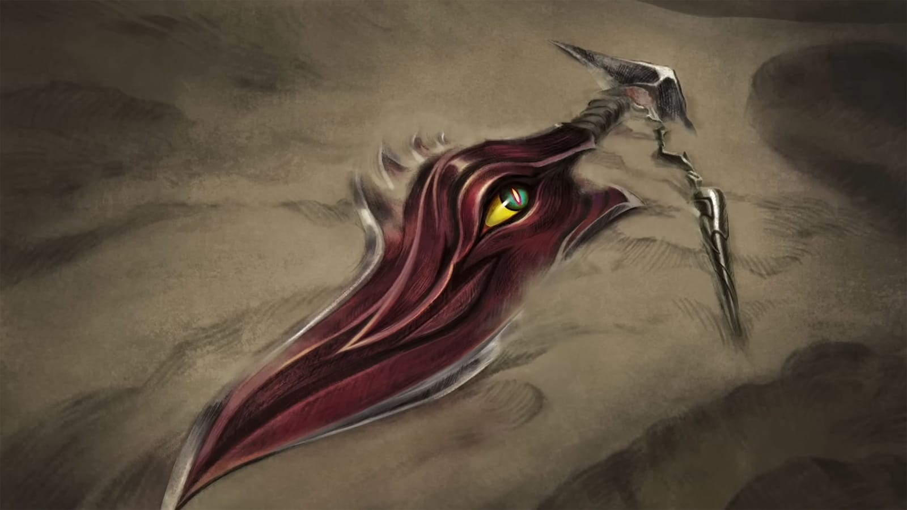

The Darkin
The Darkin are God-Warriors who were traumatized by the horrors of the Void War as well as self-infliction by the use of blood magic. Currently, all known Darkin have been imprisoned in weapons, unable to ever regain their original Ascended forms. Of all known Darkin, only three are known to have escaped their weapon in the present. These incude...
Aatrox
The World Ender
A sentient Darkin blade, Aatrox is a fallen defender of Shurima, corrupted by his own magic until he became an even greater threat than the Void. After centuries of imprisonment, Aatrox...
Read More
Rhaast
The Darkin Scythe
A sentient Darkin scythe, Rhaast is wielded by Shieda Kayn, Master Zed's second-in-command to the Order of Shadows. Slowly corrupting the young Kayn from within his prison, Rhaast...
Read More
Varus
The Arrow of Retribution
A sentient Darkin bow and once a deadly killer, Varus was imprisioned within the bow, which was found in Ionia at the end of the Darkin War. Centuries later, Varus...
Read More